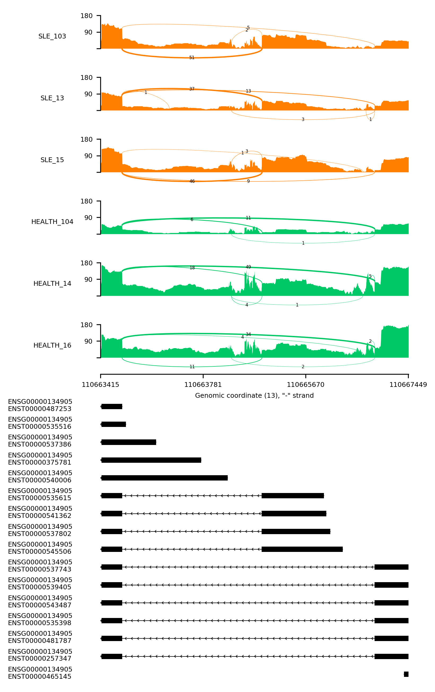

pysashimi
Pure python scripts to make sashimi plots
Why am I write this?
Cause I trying to integrate sashimi plots within Flask, rather than embed JBrowse into it.
Thanks to ggsashimi, I learned how to extract junctions and so on from BAM/SAM files
Sample
- sashmi plot share y axis

Sahimi do not share y axis

Installation
Software requirements
- Click==7.0
- matplotlib==3.0.1
- numpy==1.15.4
- openpyxl==2.5.9
- pysam==0.15.1
- tqdm==4.28.1
from source
x1git clone https://github.com/ygidtu/pysashimi.git23cd pysashimi45pip install -r requirements.txtusing docker image
xxxxxxxxxx51git clone https://github.com/ygidtu/pysashimi.git23cd pysashimi45docker build --rm -t chenlinlab/sashimi .
Usage
There are three different mode in this suite of scripts
- normal -> quite like ggsashimi
- pipeline -> specific format of meta info is required
- no-bam -> draw sashimi plot without BAM, use exons to replace BAM density
This suite of scripts will automatically check the index of BAM files and gtf files.
If there are lack of any index file (.bai or .tbi), this script will try to create one. Therefore, the write permission may required.
xxxxxxxxxx171> python main.py # docker run -it chenlinlab/sashimi234Usage: main.py [OPTIONS] COMMAND [ARGS]...56 Welcome78 This function is used to test the function of sashimi plotting910Options:11 --version Show the version and exit.12 -h, --help Show this message and exit.1314Commands:15 no-bam This function is used to plot sashimi without BAM file16 normal This function is used to plot single sashimi plotting17 pipeline This function is used to plot sashimi based on specific meta...
Common parameters between three modes
-e/--event: The region you want to plot, support chr1:100-200:+ or chr1:100-200:+@chr1:100-300:+.
-g/--gtf: for now only gtf is supported, gff3 is also in the plan (quite easy though). This suite of scripts will try to create .tbi index for gtf file to increase the I/O speed first time. Therefore write permission of the directory of gtf file may required.
-o/--output:
- For normal and no-bam: path to the output file, support common formats like pdf, png, svg, jpg, tif (may face compression issues, due to linux system do not install libtiff normally) and so on.
- For pipelin: path to the output directory, all the figures will saved as pdf
--indicator-lines:
- For normal and no-bam: add additional vertical dash lines in figure, to show the splice site or some else. eg: 150,170.
- For pipeline: this only is a flag, no comma separated integers required
--share-y: see samples
--dpi: the resolution of output figure
-t/--threshold: threshold to filter low abundance junctions, means will not draw any low expression juncitons
--no-gene: flag, default this plot will add gene id above transcript id. If this is set, will only draw transcript id
--color-factor: three modes support different kind of meta info, use this parameter to specify which column in meta info is used to assign colors
1. normal
xxxxxxxxxx341>> python main.py normal -h23Usage: main.py normal [OPTIONS]45 This function is used to plot single sashimi plotting67Options:8 -e, --event TEXT Event range eg: chr1:100-200:+ [required]9 -b, --bam PATH Path to input BAM file.1011 Or a tab separated12 text file,13 - first column is path to BAM14 file,15 - second column is BAM file16 alias(optional)17 -g, --gtf PATH Path to gtf file, both transcript and exon18 tags are necessary19 -o, --output PATH Path to output graph file20 --config PATH Path to config file, contains graph settings21 of sashimi plot [default: /Users/zhangyiming22 /Code/pysashimi/settings.ini]23 -t, --threshold INTEGER RANGE Threshold to filter low abundance junctions24 [default: 0]25 -d, --dpi INTEGER RANGE The resolution of output file [default: 300]26 --indicator-lines TEXT Where to plot additional indicator lines,27 comma separated int28 --share-y Whether different sashimi plots shared same y29 axis30 --no-gene Do not show gene id next to transcript id31 --color-factor INTEGER RANGE Index of column with color levels (1-based)32 [default: 1]33 -h, --help Show this message and exit.34-b/--bam: two different types of parameter were supported
path to specific BAM file
path to a list of BAM files (tab separated), and at least one column in this file
- path to BAM files
- The alias of BAM files, due to this list is tab separated, so space in this alias is also fine.
- additional colmuns, may used to assign colors and so on
for example (do not add any table header in the actual list):
first column second column third column /home/user/test.bam Sample 1 Red
2. pipeline
xxxxxxxxxx341>> python main.py pipeline -h2Usage: main.py pipeline [OPTIONS]34 This function is used to plot sashimi based on specific meta info56 required a specific format of input file78 This function is used to test the function of sashimi plotting910Options:11 -i, --input PATH Path to the meta info [xlsx] [required]12 -s, --span TEXT To span the input region,13 int -> span14 corresponding bp15 float -> span by16 percentage of input region [default: 100]17 -g, --gtf PATH Path to gtf file, both transcript and exon18 tags are necessary19 -o, --output PATH Path to output graph file20 --config PATH Path to config file, contains graph settings21 of sashimi plot [default: /Users/zhangyiming22 /Code/pysashimi/settings.ini]23 -t, --threshold INTEGER RANGE Threshold to filter low abundance junctions24 [default: 0]25 -d, --dpi INTEGER RANGE The resolution of output file [default: 300]26 --indicator-lines TEXT Where to plot additional indicator lines,27 comma separated int28 --share-y Whether different sashimi plots shared same y29 axis30 --no-gene Do not show gene id next to transcript id31 --color-factor INTEGER RANGE Index of column with color levels (1-based)32 [default: 1]33 -h, --help Show this message and exit.34-i/--input: path to a two sheet xlsx file, see docs/sample.xlsx, the value (if is not empty) in first sheet will added to the top-right of each sashimi
-s/--span:
- Int: will extand the input region by bp before drawing
- Float: will extand the input region by percentage of exist region length before drawing
--indicator-lines: will extract the splice sites from the input splice event ids
3.no_bam
xxxxxxxxxx331>> python main.py no-bam -h23Usage: main.py no-bam [OPTIONS]45 This function is used to plot sashimi without BAM file67Options:8 -e, --event TEXT Event range eg: chr1:100-200:+ [required]9 -i, --input PATH Path to junctions count table [required]10 --required PATH Path to tab separated list file11 1. the12 column use to plot sashimi, identical with13 count table column names14 2. optional, the15 alias of 1st column16 3. additional columns17 -g, --gtf PATH Path to gtf file, both transcript and exon18 tags are necessary19 -o, --output PATH Path to output graph file20 --config PATH Path to config file, contains graph settings21 of sashimi plot [default: /Users/zhangyiming22 /Code/pysashimi/settings.ini]23 -t, --threshold INTEGER RANGE Threshold to filter low abundance junctions24 [default: 0]25 -d, --dpi INTEGER RANGE The resolution of output file [default: 300]26 --indicator-lines TEXT Where to plot additional indicator lines,27 comma separated int28 --share-y Whether different sashimi plots shared same y29 axis30 --no-gene Do not show gene id next to transcript id31 --color-factor INTEGER RANGE Index of column with color levels (1-based)32 [default: 1]33 -h, --help Show this message and exit.-i/--input: path to extracted count table
--required: path to a list, quite like bam list in normal mode
- First column is the sample names used for plotting, corresponding to the column names of count table
- Second column is the alias names
- Additional columns